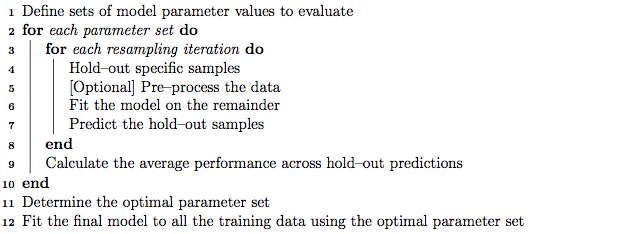

Model Training and Parameter Tuning
The caret package has several functions that attempt to streamline the model building and evaluation process.
The train function can be used to
- evaluate, using resampling, the effect of model tuning parameters on performance
- choose the "optimal" model across these parameters
- estimate model performance from a training set
First, a specific model must be chosen. Currently, 144 are available using caret; see train Model List or train Models By Tag for details. On these pages, there are lists of tuning parameters that can potentially be optimized. The first step in tuning the model (line 1 in the algorithm above is to choose a set of parameters to evaluate. For example, if fitting a Partial Least Squares (PLS) model, the number of PLS components to evaluate must be specified.

Once the model and tuning parameter values have been defined, the type
of resampling should be also be specified. Currently, k-fold
cross-validation (once or repeated),
leave-one-out cross-validation and bootstrap
(simple estimation or the 632 rule)
resampling methods can be used by train. After resampling,
the process produces a profile of performance measures is available to
guide the user as to which tuning parameter values should be
chosen. By default, the function automatically chooses the tuning
parameters associated with the best value, although different
algorithms can be used (see details below below).
An Example
The Sonar data are available in the mlbench package. Here, we load the data:
'data.frame': 208 obs. of 61 variables:
$ V1 : num 0.02 0.0453 0.0262 0.01 0.0762 0.0286 0.0317 0.0519 0.0223 0.0164 ...
$ V2 : num 0.0371 0.0523 0.0582 0.0171 0.0666 0.0453 0.0956 0.0548 0.0375 0.0173 ...
$ V3 : num 0.0428 0.0843 0.1099 0.0623 0.0481 ...
$ V4 : num 0.0207 0.0689 0.1083 0.0205 0.0394 ...
$ V5 : num 0.0954 0.1183 0.0974 0.0205 0.059 ...
$ V6 : num 0.0986 0.2583 0.228 0.0368 0.0649 ...
$ V7 : num 0.154 0.216 0.243 0.11 0.121 ...
$ V8 : num 0.16 0.348 0.377 0.128 0.247 ...
$ V9 : num 0.3109 0.3337 0.5598 0.0598 0.3564 ...
$ V10 : num 0.211 0.287 0.619 0.126 0.446 ...
$ V11 : num 0.1609 0.4918 0.6333 0.0881 0.4152 ...
$ V12 : num 0.158 0.655 0.706 0.199 0.395 ...
$ V13 : num 0.2238 0.6919 0.5544 0.0184 0.4256 ...
$ V14 : num 0.0645 0.7797 0.532 0.2261 0.4135 ...
$ V15 : num 0.066 0.746 0.648 0.173 0.453 ...
$ V16 : num 0.227 0.944 0.693 0.213 0.533 ...
$ V17 : num 0.31 1 0.6759 0.0693 0.7306 ...
$ V18 : num 0.3 0.887 0.755 0.228 0.619 ...
$ V19 : num 0.508 0.802 0.893 0.406 0.203 ...
$ V20 : num 0.48 0.782 0.862 0.397 0.464 ...
$ V21 : num 0.578 0.521 0.797 0.274 0.415 ...
$ V22 : num 0.507 0.405 0.674 0.369 0.429 ...
$ V23 : num 0.433 0.396 0.429 0.556 0.573 ...
$ V24 : num 0.555 0.391 0.365 0.485 0.54 ...
$ V25 : num 0.671 0.325 0.533 0.314 0.316 ...
$ V26 : num 0.641 0.32 0.241 0.533 0.229 ...
$ V27 : num 0.71 0.327 0.507 0.526 0.7 ...
$ V28 : num 0.808 0.277 0.853 0.252 1 ...
$ V29 : num 0.679 0.442 0.604 0.209 0.726 ...
$ V30 : num 0.386 0.203 0.851 0.356 0.472 ...
$ V31 : num 0.131 0.379 0.851 0.626 0.51 ...
$ V32 : num 0.26 0.295 0.504 0.734 0.546 ...
$ V33 : num 0.512 0.198 0.186 0.612 0.288 ...
$ V34 : num 0.7547 0.2341 0.2709 0.3497 0.0981 ...
$ V35 : num 0.854 0.131 0.423 0.395 0.195 ...
$ V36 : num 0.851 0.418 0.304 0.301 0.418 ...
$ V37 : num 0.669 0.384 0.612 0.541 0.46 ...
$ V38 : num 0.61 0.106 0.676 0.881 0.322 ...
$ V39 : num 0.494 0.184 0.537 0.986 0.283 ...
$ V40 : num 0.274 0.197 0.472 0.917 0.243 ...
$ V41 : num 0.051 0.167 0.465 0.612 0.198 ...
$ V42 : num 0.2834 0.0583 0.2587 0.5006 0.2444 ...
$ V43 : num 0.282 0.14 0.213 0.321 0.185 ...
$ V44 : num 0.4256 0.1628 0.2222 0.3202 0.0841 ...
$ V45 : num 0.2641 0.0621 0.2111 0.4295 0.0692 ...
$ V46 : num 0.1386 0.0203 0.0176 0.3654 0.0528 ...
$ V47 : num 0.1051 0.053 0.1348 0.2655 0.0357 ...
$ V48 : num 0.1343 0.0742 0.0744 0.1576 0.0085 ...
$ V49 : num 0.0383 0.0409 0.013 0.0681 0.023 0.0264 0.0507 0.0285 0.0777 0.0092 ...
$ V50 : num 0.0324 0.0061 0.0106 0.0294 0.0046 0.0081 0.0159 0.0178 0.0439 0.0198 ...
$ V51 : num 0.0232 0.0125 0.0033 0.0241 0.0156 0.0104 0.0195 0.0052 0.0061 0.0118 ...
$ V52 : num 0.0027 0.0084 0.0232 0.0121 0.0031 0.0045 0.0201 0.0081 0.0145 0.009 ...
$ V53 : num 0.0065 0.0089 0.0166 0.0036 0.0054 0.0014 0.0248 0.012 0.0128 0.0223 ...
$ V54 : num 0.0159 0.0048 0.0095 0.015 0.0105 0.0038 0.0131 0.0045 0.0145 0.0179 ...
$ V55 : num 0.0072 0.0094 0.018 0.0085 0.011 0.0013 0.007 0.0121 0.0058 0.0084 ...
$ V56 : num 0.0167 0.0191 0.0244 0.0073 0.0015 0.0089 0.0138 0.0097 0.0049 0.0068 ...
$ V57 : num 0.018 0.014 0.0316 0.005 0.0072 0.0057 0.0092 0.0085 0.0065 0.0032 ...
$ V58 : num 0.0084 0.0049 0.0164 0.0044 0.0048 0.0027 0.0143 0.0047 0.0093 0.0035 ...
$ V59 : num 0.009 0.0052 0.0095 0.004 0.0107 0.0051 0.0036 0.0048 0.0059 0.0056 ...
$ V60 : num 0.0032 0.0044 0.0078 0.0117 0.0094 0.0062 0.0103 0.0053 0.0022 0.004 ...
$ Class: Factor w/ 2 levels "M","R": 2 2 2 2 2 2 2 2 2 2 ...
There are a few factor predictors, so we will decompose these into dummy variables
using the dummyVars function in this package. This decomposition is applied
to the training and test sets.
Basic Parameter Tuning
By default, simple bootstrap resampling is used for line
3 in the algorithm above. Others are availible, such
as repeated K-fold cross-validation, leave-one-out etc. The function
trainControl can be used to specifiy the type of resampling:
More information about trainControl is given in the section on "X" below.
The first two arguments to train are the predictor and
outcome data objects, respectively. The third argument,
method, specifies the type of model (see train Model List
or train Models By Tag).
To illustrate, we will fit a boosted tree model via the gbm
package. The basic syntax for fitting this model using repeated
cross-validation is shown below:
157 samples
60 predictors
2 classes: 'M', 'R'
No pre-processing
Resampling: Cross-Validation (10 fold, repeated 10 times)
Summary of sample sizes: 142, 142, 140, 142, 142, 141, ...
Resampling results across tuning parameters:
interaction.depth n.trees Accuracy Kappa Accuracy SD Kappa SD
1 50 0.763 0.521 0.104 0.209
1 100 0.784 0.562 0.102 0.209
1 150 0.799 0.593 0.101 0.208
2 50 0.792 0.577 0.0954 0.195
2 100 0.811 0.617 0.0942 0.193
2 150 0.817 0.628 0.0867 0.178
3 50 0.805 0.605 0.0988 0.2
3 100 0.82 0.635 0.0899 0.184
3 150 0.826 0.647 0.0796 0.163
Tuning parameter 'shrinkage' was held constant at a value of 0.1
Accuracy was used to select the optimal model using the largest value.
The final values used for the model were interaction.depth = 3, n.trees = 150 and shrinkage = 0.1.
For a gradient boosting machine (GBM) model, there are three main tuning parameters:
- number of iterations, i.e. trees, (called
n.treesin thegbmfunction) - complexity of the tree, called
interaction.depth - learning rate: how quickly the algorithm adapts, called
shrinkage
The default values tested for this model are shown in the first two
columns (shrinkage is not shown beause the grid set of
candidate models all use a value of 0.1 for this tuning parameter).
The column labeled "Accuracy" is the overall agreement rate
averaged over cross-validation iterations. The agreement standard
deviation is also calculated from the cross-validation results. The
column "Kappa" is Cohen's (unweighted) Kappa statistic
averaged across the resampling results. train works with
specific models (see train Model List
or train Models By Tag).
For these models, train can automatically
create a grid of tuning parameters. By default, if p is the number
of tuning parameters, the grid size is 3^p. As another example, regularized
discriminant analysis (RDA) models have two parameters
(gamma and lambda), both of which lie on [0,
1]. The default training grid would produce nine combinations in this
two-dimensional space.
There are several notes regarding specific model behaviors
for train. There is additional functionality in train that is described in the next section.
Customizing the Tuning Process
There are a few ways to customize the process of selecting tuning/complexity parameters and building the final model.
Pre-Processing Options
As previously mentioned,train can pre-process the data in
various ways prior to model fitting. The train function
preProcess is automatically used. This function can be used
for centering and scaling, imputation (see details below),
applying the spatial sign transformation and feature extraction via
principal component analysis or independent component
analysis. Options to the preProcess function can be passed
via the trainControl function.
These processing steps would be applied during any predictions
generated using predict.train, extractPrediction or
extractProbs (see details later in this document). The
pre-processing would not be applied to predictions that
directly use the object$finalModel object.
For imputation, there are two methods currently implemented:
- k-nearest neighbors takes a sample with missing values and finds the $k$ closest samples in the training set. The average of the $k$ training set values for that predictor are used as a substitute for the original data. When calculating the distances to the training set samples, the predictors used in the calculation are the ones with no missing values for that sample and no missing values in the training set.
- another approach is to fit a bagged tree model for each predictor using the training set samples. This is usually a fairly accurate model and can handle missing values. When a predictor for a sample requires imputation, the values for the other predictors are fed through the bagged tree and the prediction is used as the new value. This model can have significant computational cost.
If there are missing values in the training set, PCA and ICA models only use complete samples.
Alternate Tuning Grids
The tuning parameter grid can be specified by the user. The argument
tuneGrid can take a data frame with columns for each tuning
parameter. The column
names should be the same as the fitting function's arguments with a
period preceding the name. For the previously mentioned RDA example, the names would be
.gamma and .lambda. train will tune the
model over each combination of values in the rows.
We can fix the learning rate and evaluate more than three values of
n.trees:
[1] 45
157 samples
60 predictors
2 classes: 'M', 'R'
No pre-processing
Resampling: Cross-Validation (10 fold, repeated 10 times)
Summary of sample sizes: 142, 142, 140, 142, 142, 141, ...
Resampling results across tuning parameters:
interaction.depth n.trees Accuracy Kappa Accuracy SD Kappa SD
1 100 0.795 0.585 0.0915 0.187
1 200 0.804 0.602 0.0899 0.184
1 300 0.804 0.603 0.0909 0.186
1 400 0.809 0.612 0.0866 0.177
1 500 0.811 0.618 0.0838 0.171
1 600 0.811 0.618 0.0884 0.18
: : : : : :
9 900 0.828 0.649 0.0951 0.195
9 1000 0.826 0.647 0.0933 0.191
9 1100 0.827 0.648 0.0947 0.194
9 1200 0.824 0.641 0.0927 0.19
9 1300 0.823 0.64 0.0913 0.187
9 1400 0.82 0.636 0.095 0.194
9 1500 0.822 0.64 0.0926 0.188
Tuning parameter 'shrinkage' was held constant at a value of 0.1
Accuracy was used to select the optimal model using the largest value.
The final values used for the model were interaction.depth = 9, n.trees = 600 and shrinkage = 0.1.
Plotting the Resampling Profile
The plot function can be used to examine the relationship between the
estimates of performance and the tuning parameters. For example, a simple invokation of
the function shows the results for the first performance measure:
produces the following plot:

Other performance metrics can be shown using the metric option:
produces the following plot:

Other types of plot are also available. See ?plot.train for more details.
The code below shows a heatmap of the results:
produces the following plot:

There are also plot functions that show more detailed representations of the
resampled estimates. See ?xyplot.train for more details.
From these plots, a different set of tuning parameters may be desired. To change the
final values without starting the whole process again, the update.train
can be used to refit the final model. See ?update.train
The trainControl Function
The function trainControl generates parameters that further
control how models are created, with possible values:
-
method: The resampling method:boot,boot632,cv,LOOCV,LGOCV,repeatedcvandoob. The last value, out-of-bag estimates, can only be used by random forest, bagged trees, bagged earth, bagged flexible discriminant analysis, or conditional tree forest models. GBM models are not included (the gbm package maintainer has indicated that it would not be a good idea to choose tuning parameter values based on the model OOB error estimates with boosted trees). Also, for leave-one-out cross-validation, no uncertainty estimates are given for the resampled performance measures. -
numberandrepeats:numbercontrols with the number of folds in K-fold cross-validation or number of resampling iterations for bootstrapping and leave-group-out cross-validation.repeatsapplied only to repeated K-fold cross-validation. Suppose thatmethod = "repeatedcv",number = 10andrepeats = 3,then three separate 10-fold cross-validations are used as the resampling scheme. -
verboseIter: A logical for printing a training log. -
returnData: A logical for saving the data into a slot calledtrainingData. -
p: For leave-group out cross-validation: the training percentage -
classProbs: a logical value determining whether class probabilities should be computed for held-out samples during resample. -
index: a list with elements for each resampling iteration. Each list element is the sample rows used for training at that iteration. When these values are not specified,trainwill generate them. -
summaryFunction: a function to compute alternate performance summaries. details. -
selectionFunction: a function to choose the optimal tuning parameters. and examples. -
PCAthresh,ICAcompandk: these are all options to pass to thepreProcessfunction (when used). -
returnResamp: a character string containing one of the following values:"all","final"or"none". This specifies how much of the resampled performance measures to save.
Alternate Performance Metrics
The user can change the metric used to determine the best settings. By
default, RMSE and R2 are computed for regression while accuracy and
Kappa are computed for classification. Also by default, the parameter
values are chosen using RMSE and accuracy, respectively for
regression and classification. The metric argument of the
train function allows the user to control which the
optimality criterion is used. For example, in problems where there are
a low percentage of samples in one class, using metric =
"Kappa" can improve quality of the final model.
If none of these parameters are satisfactory, the user can also
compute custom performance metrics. The trainControl function
has a argument called summaryFunction that specifies a
function for computing performance. The function should have these
arguments:
-
datais a reference for a data frame or matrix with columns calledobsandpredfor the observed and predicted outcome values (either numeric data for regression or character values for classification). Currently, class probabilities are not passed to the function. The values in data are the held-out predictions (and their associated reference values) for a single combination of tuning parameters. If theclassProbsargument of thetrainControlobject is set toTRUE, additional columns indatawill be present that contains the class probabilities. The names of these columns are the same as the class levels. -
levis a character string that has the outcome factor levels taken from the training data. For regression, a value ofNULLis passed into the function. -
modelis a character string for the model being used (i.e. the value passed to themethodargument oftrain).
The output to the function should be a vector of numeric summary
metrics with non-null names. By default, train evaluate classification models in terms of
the predicted classes. Optionally, class probabilities can also be
used to measure performance. To obtain predicted class probabilities
within the resampling process, the argument classProbs in
trainControl must be set to TRUE. This merges
columns of probabilities into the predictions generated from each
resample (there is a column per class and the column names are the
class names).
As shown in the last section, custom functions can be used to
calculate performance scores that are averaged over the
resamples. Another built-in function, twoClassSummary, will
compute the sensitivity, specificity and area under the ROC curve:
1 function (data, lev = NULL, model = NULL)
2 { 3 require(pROC)
4 if (!all(levels(data[, "pred"]) == levels(data[, "obs"])))
5 stop("levels of observed and predicted data do not match") 6 rocObject <- try(pROC:::roc(data$obs, data[, lev[1]]), silent = TRUE)
To rebuild the boosted tree model using this criterion, we can see the relationship between the tuning parameters and the area under the ROC curve using the following code:
157 samples
60 predictors
2 classes: 'M', 'R'
No pre-processing
Resampling: Cross-Validation (10 fold, repeated 10 times)
Summary of sample sizes: 142, 142, 140, 142, 142, 141, ...
Resampling results across tuning parameters:
interaction.depth n.trees ROC Sens Spec ROC SD Sens SD Spec SD
1 100 0.878 0.831 0.719 0.0881 0.127 0.165
1 200 0.884 0.86 0.741 0.0858 0.116 0.16
1 300 0.884 0.863 0.739 0.0856 0.118 0.15
1 400 0.885 0.858 0.751 0.0864 0.111 0.159
1 500 0.883 0.859 0.748 0.0878 0.109 0.159
1 600 0.883 0.86 0.751 0.0859 0.112 0.156
: : : : : : : :
9 900 0.907 0.891 0.759 0.0827 0.116 0.155
9 1000 0.906 0.887 0.763 0.0831 0.114 0.152
9 1100 0.902 0.881 0.756 0.102 0.114 0.155
9 1200 0.901 0.887 0.759 0.103 0.117 0.15
9 1300 0.902 0.885 0.761 0.102 0.118 0.15
9 1400 0.903 0.873 0.774 0.102 0.127 0.156
9 1500 0.903 0.869 0.791 0.104 0.131 0.148
Tuning parameter 'shrinkage' was held constant at a value of 0.1
ROC was used to select the optimal model using the largest value.
The final values used for the model were interaction.depth = 5, n.trees = 900 and shrinkage = 0.1.
In this case, the average area under the ROC curve associated with the optimal tuning parameters was 0.913 across the 100 resamples.
Choosing the Final Model
Another method for customizing the tuning process is to modify the
algorithm that is used to select the "best" parameter values, given
the performance numbers. By default, the train function
chooses the model with the largest performance value (or smallest, for
mean squared error in regression models). Other schemes for selecting
model can be used. Breiman et al (1984) suggested the "one standard
error rule" for simple tree-based models. In this case, the model
with the best performance value is identified and, using resampling,
we can estimate the standard error of performance. The final model
used was the simplest model within one standard error of the
(empirically) best model. With simple trees this makes sense, since
these models will start to over-fit as they become more and more
specific to the training data.
train allows the user to specify alternate rules for
selecting the final model. The argument selectionFunction
can be used to supply a function to algorithmically determine the
final model. There are three existing functions in the package:
best is chooses the largest/smallest value, oneSE
attempts to capture the spirit of Breiman et al (1984) and
tolerance selects the least complex model within some percent
tolerance of the best value. See ?best for more details.
User-defined functions can be used, as long as they have the following arguments:
xis a data frame containing the tune parameters and their associated performance metrics. Each row corresponds to a different tuning parameter combination.metrica character string indicating which performance metric should be optimized (this is passed in directly from themetricargument oftrain.maximizeis a single logical value indicating whether larger values of the performance metric are better (this is also directly passed from the call totrain).
The function should output a single integer indicating which row in
x is chosen.
As an example, if we chose the previous boosted tree model on the basis of overall accuracy, we would choose: interaction depth = 5, n trees = 900, shrinkage = 0.1. However, the scale in this plots is fairly tight, with accuracy values ranging from 0.878 to 0.913. A less complex model (e.g. fewer, more shallow trees) might also yield acceptable accuracy.
The tolerance function could be used to find a less complex model based on (x-xbest)/xbestx 100$, which is the percent difference. For example, to select parameter values based on a 2% loss of performance:
interaction.depth n.trees shrinkage ROC Sens Spec ROCSD SensSD SpecSD
16 5 100 0.1 0.9037029 0.8633333 0.7721429 0.07035011 0.118736 0.1621036
This indicates that we can get a less complex model with and accuracy of 0.904 (compared to the "pick the best" value of 0.913).
The main issue with these functions is related to ordering the models
from simplest to complex. In some cases, this is easy (e.g. simple
trees, partial least squares), but in cases such as this model, the ordering of
models is subjective. For example, is a boosted tree model using 100
iterations and a tree depth of 2 more complex than one with 50
iterations and a depth of 8? The package makes some choices regarding
the orderings. In the case of boosted trees, the package assumes that
increasing the number of iterations adds complexity at a faster rate
than increasing the tree depth, so models are ordered on the number of
iterations then ordered with depth. See ?best for more
examples for specific models.
Extracting Predictions and Class Probabilities
As previously mentioned, objects produced by the train
function contain the "optimized" model in the finalModel
sub-object. Predictions can be made from these objects as usual. In
some cases, such as pls or gbm objects, additional
parameters from the optimized fit may need to be specified. In these
cases, the train objects uses the results of the parameter
optimization to predict new samples. For example, if predictions were create
using predict.gbm, the user would have to specify the number of trees
directly (there is no default). Also, for binary classification, the predictions
from this function take the form of the probability of one of the classes, so
extra steps are required to convert this to a factor vector. predict.train
automatically handles these details for this (and for other models).
Also, there are very few standard syntaxes for model predictions in R. For example,
to get class probabilities, many predict methods have an argument called
type that is used to specify whether the classes or probabilities should
be generated. Different packages use different values of type, such as
"prob", "posterior", "response", "probability" or "raw". In other cases, completely
different syntax is used.
For predict.train, the type options are standardized to be "class"
and "prob" (the underlying code matches these to the appropriate choices for each
model. For example:
[1] R R R R M M
Levels: M R
M R
1 2.571188e-07 9.999997e-01
2 5.284334e-08 9.999999e-01
3 1.441567e-17 1.000000e+00
4 1.056927e-06 9.999989e-01
5 9.999927e-01 7.301546e-06
6 9.978181e-01 2.181921e-03
Exploring and Comparing Resampling Distributions
Within-Model
resamples = "all" note
There are several lattice functions than can be used to explore relationships between tuning parameters and the resampling results for a specific model:
xyplotandstripplotcan be used to plot resampling statistics against (numeric) tuning parameters.histogramanddensityplotcan also be used to look at distributions of the tuning parameters across tuning parameters.
For example, the following statements
produce the following plot:

Between-Models
The caret package also includes functions to characterize the differences
between models (generated using train, sbf or
rfe) via their resampling distributions. These functions are
based on the work of Hothorn et al. (2005) and Eugster et al (2008).
First, a support vector machine model is fit to the Sonar data. The data are centered and scaled using hte preProc argument. Note that the same random number seed is set prior to the model that is idenditcal to the seed used for the boosted tree model. This ensures that the same resampling sets are used, which will come in handy when we compare the resamling profiles between models.
157 samples
60 predictors
2 classes: 'M', 'R'
Pre-processing: centered, scaled
Resampling: Cross-Validation (10 fold, repeated 10 times)
Summary of sample sizes: 142, 142, 140, 142, 142, 141, ...
Resampling results across tuning parameters:
C ROC Sens Spec ROC SD Sens SD Spec SD
0.25 0.874 0.952 0.546 0.0831 0.0788 0.18
0.5 0.912 0.919 0.665 0.062 0.0973 0.176
1 0.937 0.908 0.744 0.0539 0.102 0.165
2 0.943 0.899 0.764 0.0519 0.107 0.156
4 0.953 0.922 0.793 0.0502 0.0976 0.156
8 0.952 0.93 0.788 0.0493 0.0905 0.158
16 0.952 0.93 0.788 0.0493 0.0905 0.158
32 0.952 0.93 0.788 0.0493 0.0905 0.158
Tuning parameter 'sigma' was held constant at a value of 0.0168
ROC was used to select the optimal model using the largest value.
The final values used for the model were C = 4 and sigma = 0.0168.
Also, a regularized discriminant analysis model was fit.
157 samples
60 predictors
2 classes: 'M', 'R'
No pre-processing
Resampling: Cross-Validation (10 fold, repeated 10 times)
Summary of sample sizes: 142, 142, 140, 142, 142, 141, ...
Resampling results across tuning parameters:
gamma lambda ROC Sens Spec ROC SD Sens SD Spec SD
0 0 0.563 0.924 0.395 0.22 0.0828 0.214
0 0.333 0.836 0.844 0.728 0.122 0.134 0.174
0 0.667 0.858 0.825 0.78 0.114 0.148 0.158
0 1 0.849 0.775 0.765 0.0983 0.158 0.169
0.333 0 0.894 0.869 0.748 0.0827 0.115 0.167
0.333 0.333 0.913 0.899 0.78 0.0696 0.112 0.138
0.333 0.667 0.908 0.911 0.769 0.0721 0.103 0.141
0.333 1 0.867 0.83 0.776 0.0858 0.136 0.141
0.667 0 0.885 0.87 0.733 0.0855 0.111 0.165
0.667 0.333 0.892 0.892 0.729 0.0852 0.101 0.161
0.667 0.667 0.885 0.883 0.742 0.0892 0.112 0.157
0.667 1 0.856 0.787 0.773 0.0915 0.14 0.16
1 0 0.722 0.659 0.646 0.132 0.172 0.203
1 0.333 0.727 0.659 0.649 0.127 0.172 0.204
1 0.667 0.729 0.662 0.649 0.127 0.173 0.203
1 1 0.731 0.666 0.646 0.127 0.173 0.204
ROC was used to select the optimal model using the largest value.
The final values used for the model were gamma = 0.333 and lambda = 0.333.
Given these models, can we make statistical statements about their
performance differences? To do this, we first collect the resampling
results using resamples.
Call:
resamples.default(x = list(GBM = gbmFit3, SVM = svmFit, RDA = rdaFit))
Models: GBM, SVM, RDA
Number of resamples: 100
Performance metrics: ROC, Sens, Spec
Time estimates for: everything, final model fit
Call:
summary.resamples(object = resamps)
Models: GBM, SVM, RDA
Number of resamples: 100
ROC
Min. 1st Qu. Median Mean 3rd Qu. Max. NA's
GBM 0.6429 0.8745 0.9252 0.9131 0.9683 1 0
SVM 0.7321 0.9286 0.9683 0.9535 0.9896 1 0
RDA 0.6032 0.8750 0.9219 0.9131 0.9643 1 0
Sens
Min. 1st Qu. Median Mean 3rd Qu. Max. NA's
GBM 0.625 0.8507 0.8889 0.8883 1 1 0
SVM 0.500 0.8750 0.9444 0.9218 1 1 0
RDA 0.625 0.8750 0.8889 0.8988 1 1 0
Spec
Min. 1st Qu. Median Mean 3rd Qu. Max. NA's
GBM 0.3750 0.7143 0.7500 0.7646 0.8571 1 0
SVM 0.2857 0.7143 0.8571 0.7930 0.8750 1 0
RDA 0.2857 0.7143 0.7500 0.7804 0.8571 1 0
There are several
A variety of plots can be created for the resampling results:


Other visualizations are availible in densityplot.resamples and parallel.resamples
Since models are fit on the same versions of the training data, it makes sense to make inferences on the differences between models. In this way we reduce the within-resample correlation that may exist. We can compute the differences, then use a simple t-test to evaluate the null hypothesis that there is no difference between models.
Call:
diff.resamples(x = resamps)
Models: GBM, SVM, RDA
Metrics: ROC, Sens, Spec
Number of differences: 3
p-value adjustment: bonferroni
Call:
summary.diff.resamples(object = difValues)
p-value adjustment: bonferroni
Upper diagonal: estimates of the difference
Lower diagonal: p-value for H0: difference = 0
ROC
GBM SVM RDA
GBM -4.037e-02 3.329e-18
SVM 1.951e-10 4.037e-02
RDA 1 2.104e-08
Sens
GBM SVM RDA
GBM -0.03347 -0.01042
SVM 0.008567 0.02306
RDA 1.000000 0.200447
Spec
GBM SVM RDA
GBM -0.02839 -0.01571
SVM 0.1182 0.01268
RDA 1.0000 1.0000
This class also has some visualization methods, including:


Custom Methods for train
Although there are currently more than
140
methods available to train, there may be the need to create
custom model functions (e.g. testing a new model etc). One
application of custom models would be to create diverse ensembles of
models. For example, a set of different classification models may be
fit to the same data and a "pick-the-winner" approach can be
taken (or the average of the class probabilities could be used, see
Kuncheva (2004) or Seni and Elder (2010)). train already has
a framework for resampling and tuning models and
predict.train can be used to encapsulate the ensemble of
models into one call for prediction.
How To Write Custom Methods
The user will need to deviate from the standard call in two ways:
- use
method = "custom"in the call totrain, and - add the required functions for the model using
trainControl
The custom argument of trainControl requires a list of
named functions with the following elements: parameters,
model, prediction, prob and sort.
The parameters Argument
This element is used to specify or generate the models tuning parameters. This can be done either as a function to generate them or a data frame of the actual parameters.
Inputs:
data: a data frame of the training set data. The outcome will be in a column labeled.outcome. If the formula method fortrainwas invoked, the data passed into this function will have been processed (i.e. dummy variables have been created etc).lenan optional parameter passed in form thetuneLengthargument totrain
Outputs: a data frame where
- all columns start with a dot
- there is at least one row
Instead of a function, the final data frame can be passed in
The model Function
This element fits the model and any other functions (e.g. pre-processing of the data)
Inputs:
-
data: a data frame of the training set data. The outcome will be in a column labeled.outcome. If case weights were specified in thetraincall, these are in the column.modelWeights. If the formula method fortrainwas invoked, the data passed into this function will have been processed (i.e. dummy variables have been created etc). -
weightscase weights -
parametera single row data frame with the current tuning parameter -
levels: eitherNULLor a character vector or factor labels -
lasta logical vector for the final model fit with the selected tuning parameters and the full training set -
...arguments passed formtrainto this function
Outputs: a list with at least one element:
-
fit: the object corresponding to the trained model
Anything else can be attached to this object. If custom
pre-processing is required, this can be estimated in the model
function and attached to the output list. Subsequent calls to the
prediction and probability functions will have the
entire list available, so the processing can be applied to the new
data.
The prediction Function
This should be a function that produces either a number vector (for regression) or a factor (or character) vector for classification.
Inputs:
-
object: a list with two elements resulting from the model function -
newdata: a matrix or data frame of predictors to be processed through the model (and possibly pre-processing routine)
The output should be either a numeric, character or factor vector. For classification, factors are converted to character elsewhere to ensure the proper levels are in the output.
The probability Argument
For classification models, this function should generate a data frame of class probabilities. For regression, a value of NULL can be used.
Inputs:
-
object: a list with two elements resulting from the model function -
newdata: a matrix or data frame of predictors to be processed through the model (and possibly pre-processing routine)
The output should be a data frame with these characteristics:
- as many columns are factor levels
- column names are the same as the factor levels and in the same order
The sort Function
There are cases where multiple tuning parameters yield the same level
of performance. In these situations, train will choose the
parameters associated with the most simplistic model. This function
should take the grid of tuning parameters and order them from least
complex to most complex.
The input is a data frame of tuning parameters (without the preceding dot in the name).
The output is the same data frame sorted appropriately.
An Example
As an example, suppose we want to test out rpart models where
we tune over the complexity parameter and the minimum number of
samples in a node to do further splitting (a.k.a minsplit).
We'll use the Sonar data in the mlbench package to illustrate.
First, we would need to create a training grid with the candidate
values of cp and minsplit. When using the nominal
rpart method in train, an initial rpart model is
created and the unique values of the complexity parameter are obtained
from the sub-object cptable. We will test two values of
minsplit: 10 and 30. First, we get the unique
$C_p$ values for minsplit = 10
1 2 3 4 5 6
0.49315068 0.08219178 0.07534247 0.04109589 0.03196347 0.02054795
From these, we will create the tuning grid of 11 canidiate models:
We can now write a model function:
It is a good idea to load the rpart package and anything else needed within the function. The prediciton function is simple:
Sorting by complexity is somewhat subjective. Both parameters govern
how deep the tree can be. We will sort by cp then minsplit:
Now we can create a control object for train:
The predict, print, plot and resamples
methods work with custom models. In the case of plot.train, the
axis and key labels will be the parameter names. However, update
can be used to make the labels more descriptive: